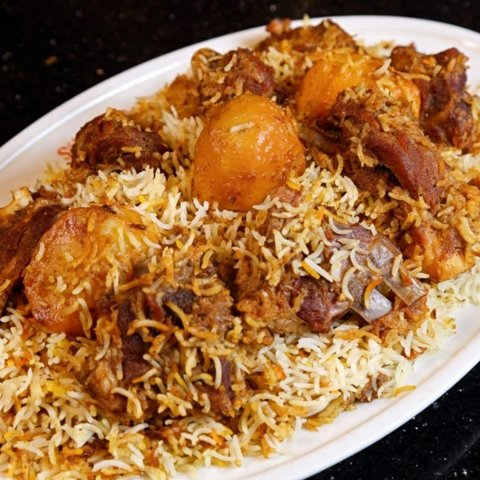

Home / About
About the project
About
Why I chose kacchi biryani, what it represents, and where the facts on this site come from.

Why I chose this dish
Kacchi biryani is one of my favorite foods from Bangladesh. My family eats it at weddings, Eid and special gatherings. Its smell reminds me of celebration, relatives and home.
Talha Zubaer
What it represents
Plants, knowledge, culture
Plants
Rice, potatoes, aromatics and spices give the dish its structure, flavor and fragrance.
Knowledge
Marination, layering and dum cooking are skills passed from cook to cook.
Culture
Weddings and family gatherings give the dish its emotional and social meaning.
Research sources
Read further
- Food: Kacchi biryani · Tourism Bangladesh
- Kachchi Biriyani · Bangladesh Tourism Board
- Looking back at the history of Kacchi biryani · Dhaka Tribune
- How kachchi biriyani became a symbol of wedding prestige · The Daily Star
- Kitchen Language: What Is Dum Pukht? · Michelin Guide
- Bangladeshi Rice Culture · Jahan Lipa (2021)
- Herbal Spices as Food and Medicine · National Library of Medicine
- Plants of the World Online · Royal Botanic Gardens, Kew